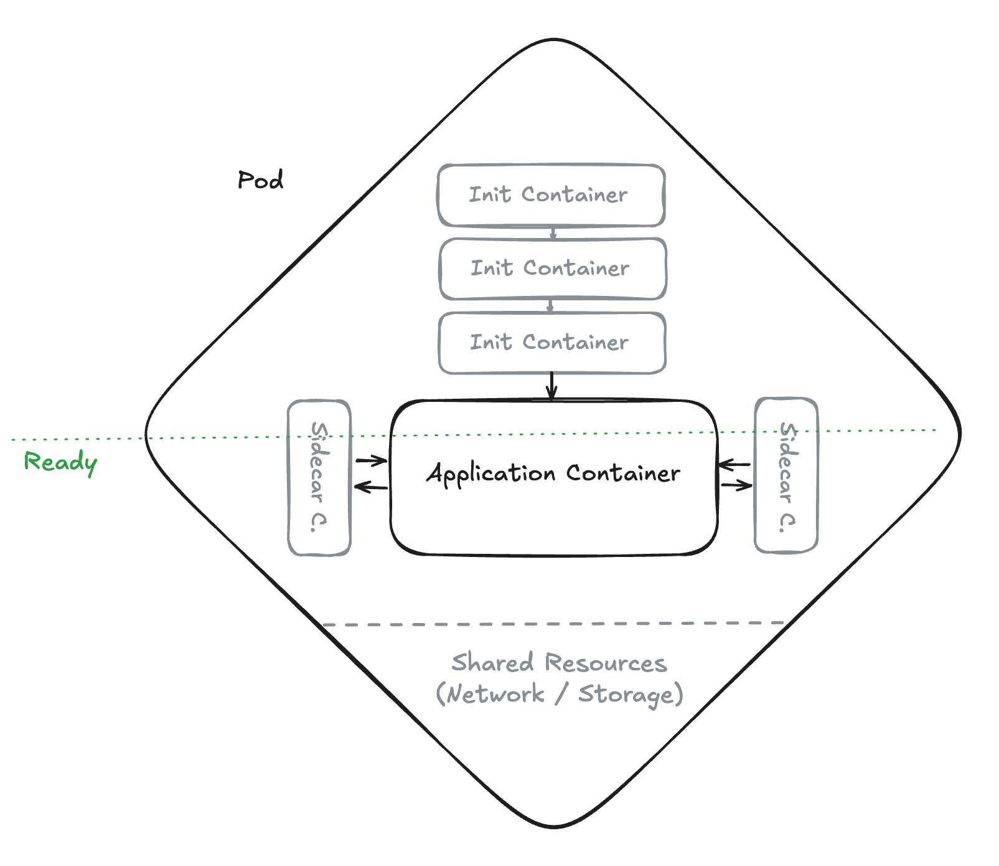

Kubernetes-Ressourcen
Kubernetes verwaltet Anwendungen über deklarative Ressourcen. Du beschreibst sie als YAML-Manifeste, wendest sie auf den Cluster an – und Kubernetes sorgt dafür, dass der Ist-Zustand dem beschriebenen Soll-Zustand folgt.
| Kategorie | Ressourcen |
|---|---|
| Workloads | Pod, Deployment, ReplicaSet, DaemonSet, StatefulSet, Job, CronJob |
| Netzwerk | Service, Ingress, NetworkPolicy |
| Konfiguration | ConfigMap, Secret |
| Speicher | PersistentVolume, PersistentVolumeClaim, StorageClass |
| Sicherheit und Zugriff | Namespace, ServiceAccount, Role, ClusterRole, RoleBinding, ClusterRoleBinding |
Workloads
Pod
Die kleinste bereitstellbare Einheit in Kubernetes – ein oder mehrere Container, die gemeinsam auf demselben Worker Node laufen. Die Container eines Pods teilen sich
- denselben Netzwerk-Namespace (sie sprechen sich über
localhostan) und - optional gemeinsame Volumes.
Pods ermöglichen Muster wie das Sidecar-Pattern, bei dem ein Hilfscontainer (etwa für Logging oder als Proxy) neben dem Hauptcontainer läuft.

Der Pod ist auch die Einheit für Lebenszyklus und Skalierung: Kubernetes startet, stoppt und überwacht Pods als Ganzes. Wird eine Anwendung skaliert, entstehen zusätzliche Pod-Replicas – nicht zusätzliche Container im selben Pod. Ebenso ersetzt ein Rolling Update ganze Pods durch neue.
Neben dem eigentlichen App-Container kann ein Pod weitere Container enthalten:
Init-Container
Laufen vor dem App-Container und müssen erfolgreich enden, bevor die Anwendung startet. Geeignet für Vorbereitungsaufgaben.
Sidecar-Container
Laufen parallel zum App-Container, die ganze Lebensdauer des Pods über. Geeignet für Querschnittsaufgaben.
Drei Szenarien: App-, Init- und Sidecar-Container im Zusammenspiel
| Szenario | App-Container | Init-Container | Sidecar-Container |
|---|---|---|---|
| Web-App mit DB-Migration und Logging | Anwendungsserver (etwa Quarkus) | Führt vor dem Start die Datenbankmigrationen aus (etwa Liquibase, Flyway) – so ist das Schema garantiert migriert, bevor die Anwendung startet | Log-Collector (etwa Fluentd), der Logdateien aus einem gemeinsamen Volume liest und weiterleitet |
| Transactional Outbox Pattern | Microservice, der Geschäftslogik ausführt und Events in eine Outbox-Tabelle schreibt (in derselben DB-Transaktion) | – | Einfacher Poller, der die Outbox-Tabelle regelmäßig abfragt und Events an Kafka sendet (Alternative: Debezium mit CDC als eigenes Deployment) |
| App mit TLS-Proxy | Backend-Anwendung (nur HTTP) | Lädt Zertifikate aus einem Secret und legt sie im gemeinsamen Volume ab | Envoy oder NGINX als Reverse Proxy, der TLS terminiert und den Traffic an den App-Container weiterleitet |
In der Praxis legst Du Pods nicht direkt an, sondern über Deployments, die den gewünschten Zustand verwalten. Mehr dazu in der Kubernetes-Dokumentation zu Pods.
Die anderen Workloads
Deployment
Verwaltet eine gewünschte Anzahl von Pod-Replicas und stellt sicher, dass immer die richtige Anzahl läuft. Deployments ermöglichen:
- Rolling Updates – alte Pods schrittweise durch neue ersetzen
- Rollbacks – zu einer früheren Version zurückkehren
- Skalierung – die Anzahl der Replicas ändern
ReplicaSet
Wird von einem Deployment automatisch erzeugt und verwaltet. Stellt sicher, dass die gewünschte Anzahl identischer Pods läuft. Wird selten direkt konfiguriert.
DaemonSet
Stellt sicher, dass auf jedem (oder auf ausgewählten) Knoten genau ein Pod läuft. Typische Einsätze: Log-Collector, Monitoring-Agents, Netzwerk-Plugins.
StatefulSet
Wie ein Deployment, aber für zustandsbehaftete Anwendungen. Jeder Pod bekommt eine stabile Identität (Name, Netzwerk, Speicher), die auch Neustarts übersteht. Geeignet für Datenbanken, Message Queues und Ähnliches – siehe PostgreSQL auf Kubernetes.
Job und CronJob
- Job – führt einen oder mehrere Pods aus, bis sie erfolgreich abgeschlossen sind (etwa Batch-Verarbeitung, Datenmigration).
- CronJob – startet Jobs nach einem Zeitplan (Cron-Syntax).
Netzwerk
Service
Stellt Pods unter einer stabilen IP-Adresse und einem DNS-Namen bereit. Dafür sorgt kube-proxy, der auf jedem Knoten die virtuelle IP-Adresse des Service den tatsächlichen Pod-Adressen zuordnet. So bleibt die Adresse stabil, auch wenn Pods neu gestartet oder verschoben werden.
| Typ | Beschreibung |
|---|---|
| ClusterIP | Nur innerhalb des Clusters erreichbar (Standard) |
| NodePort | Öffnet einen Port auf jedem Knoten |
| LoadBalancer | Erzeugt einen externen Load Balancer (beim Cloud-Anbieter) |
Ingress
Regelt den Zugriff von außen per HTTP(S) auf Services im Cluster. Ermöglicht Routing nach Host und Pfad sowie TLS-Terminierung. Braucht einen Ingress Controller (etwa NGINX oder Traefik).
OpenShift verwendet statt Ingress eigene Route-Ressourcen, die einfacher zu konfigurieren sind und TLS-Terminierung von Haus aus bieten – siehe Was ist OpenShift?.
NetworkPolicy
Definiert Regeln, die den Netzwerkverkehr zwischen Pods einschränken – eine Firewall auf Ebene der Pods.
Konfiguration
ConfigMap
Speichert Konfigurationsdaten als Schlüssel-Wert-Paare. Container bekommen sie als Umgebungsvariablen oder als Dateien über Volumes.
Secret
Wie eine ConfigMap, aber für sensible Daten (Passwörter, Tokens, Zertifikate). Die Werte sind nur Base64-kodiert; verschlüsselt werden sie erst, wenn der Cluster dafür eingerichtet ist – siehe Sind Secrets sicher?.
Speicher
PersistentVolume (PV)
Ein Speichermedium im Cluster – vom Administrator bereitgestellt oder von einer StorageClass automatisch angelegt.
PersistentVolumeClaim (PVC)
Die Anforderung von Speicher durch eine Anwendung. Damit lebt der Speicher unabhängig vom Pod: Die Daten bleiben erhalten, auch wenn der Pod gelöscht wird.
StorageClass
Beschreibt Arten von Speicher (etwa SSD, HDD, NFS) und ermöglicht dynamische Provisionierung: Ein PV entsteht automatisch, sobald ein PVC angelegt wird.
Sicherheit und Zugriff
Namespace
Eine logische Trennung innerhalb eines Clusters – für Teams, Projekte oder Umgebungen
(etwa dev, staging, prod). Die meisten Ressourcen (Pods, Services, ConfigMaps,
Secrets …) gehören zu genau einem Namespace. Namespaces ermöglichen:
- organisatorische Trennung – mehrere Teams arbeiten im selben Cluster, ohne sich gegenseitig zu stören
- Zugriffskontrolle – Berechtigungen per RBAC je Namespace
- Resource Quotas – Grenzen für CPU, Speicher und Anzahl der Ressourcen je Namespace
Jeder Cluster bringt die Namespaces default, kube-system und kube-public mit. In
OpenShift heißt der Namespace Project.
# Namespace anlegen
kubectl create namespace mein-projekt
# Pods in einem bestimmten Namespace anzeigen
kubectl get pods -n mein-projekt
ServiceAccount
Die Identität eines Pods, mit der er sich gegenüber der Kubernetes-API oder externen Diensten ausweist.
Role und RoleBinding
RBAC (Role-Based Access Control) regelt, welche Benutzer und ServiceAccounts welche Aktionen auf welchen Ressourcen ausführen dürfen.
- Role / ClusterRole – die erlaubten Aktionen, in einem Namespace bzw. im ganzen Cluster
- RoleBinding / ClusterRoleBinding – wer diese Rolle bekommt
Health Checks
Kubernetes überwacht Container mit Startup-, Liveness- und Readiness-Probes: Es startet fehlerhafte Container automatisch neu und schickt Traffic nur an Container, die bereit sind. Probes werden je Container konfiguriert, nicht je Pod. Die drei Arten, ihre Einstellungen und Beispiele erklärt die Seite Health Checks mit Probes.